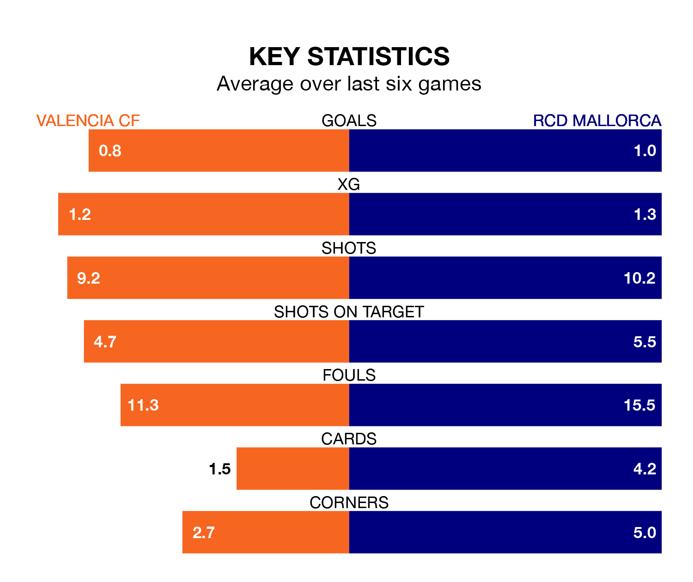

Valencia CF host RCD Mallorca on Saturday at Estadio de Mestalla in La Liga.
In their last league match, on March 17, Valencia lost to Villarreal 1-0 away.
Mallorca won, 1-0 at home against Granada CF on March 16, with Antonio Raíllo scoring their goals.
In the last 10 years, Valencia and Mallorca have played each other on seven occasions. Valencia won two of them, Mallorca three, and they drew twice.
On average, Valencia scored 1.1 goals and Mallorca 1.4 in those matches.
Their last meeting was on October 7, when they played out a 1-1 draw.
With 25 goals in 29 games so far this season, Mallorca are the league's joint-third-lowest scorers with 0.9 goals per game. But they are conceding fewer than average too, letting in 35 goals at a rate of 1.2 per game.
Valencia are also below average scorers, with 1.1 goals per game, compared to a league average of 1.3. They have also conceded 1.1 goals per game.
The visitors are 14th in the table after 29 games, of which they have won six and drawn 12, earning 30 points.
The home team are six places ahead of Mallorca in eighth, with 11 wins and seven draws putting them on 40 points.
Valencia are in mixed form in La Liga, with two wins and two draws from their last six games.
With three wins and a draw over that period, Mallorca's form is slightly better – they have taken 10 points from 18, compared to Valencia's eight.
In Hugo Duro, the hosts have one of the league's sharpest shooters so far this season. He has notched 12 goals in 28 appearances, to sit ninth in the scoring charts.
The away side's top scorers, with five goals each, are Abdón Prats and Vedat Muriqi.
Updated: 12:39 (UTC), 26/03/24